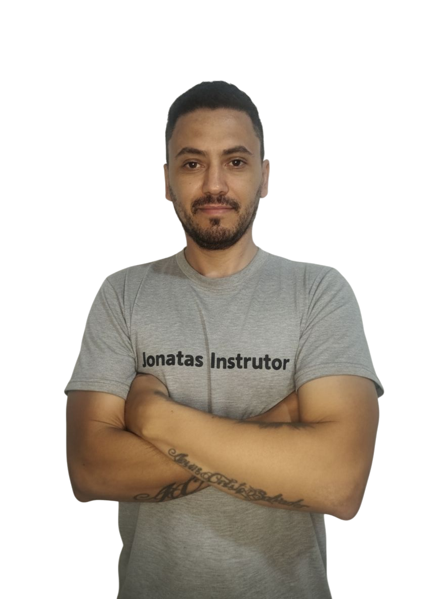

Últimos alunos aprovados no teste prático.


Minha História
Sou Jônatas da Cunha Silva, instrutor de trânsito teórico e prático apaixonado por ensinar com
paciência e técnica.
Nasci na cidade de Porto Alegre - RS, no dia 09/11/1986, e foi lá que surgiu o meu primeiro
interesse em trabalhar como instrutor de trânsito.
Na época eu estava trabalhando em uma empresa da cidade como auxiliar administrativo e, em um
certo dia, quando eu estava no ônibus indo para o trabalho, encontrei um antigo colega da
empresa e foi quando, durante nossa conversa, ele comentou que estava fazendo o curso para ser
instrutor de trânsito. Ele me explicou como funcionava o curso, o que precisava para se
matricular e onde fazer. Achei a ideia interassante e fiquei com muita vontade de fazer, porém
eu acabei não fazendo pois eu morava em Cachoeirinha - RS, onde me criei e morei ate meus 22
anos. Apesar de serem cidades vizinhas, a logística para mim era inviável pois o local onde era
feito o curso era muito longe da minha casa e como eu dependia de ônibus os horarios eram
bem complicados, mas desde então eu já fiquei
com essa sementinha na cabeça.
Após sair desta empresa, trabalhei em outros lugares como, uma metalurgica - como auxiliar
administrativo, em uma estofaria
- como ajudante de estofador e motorista e também trabalhei
como montador de móveis junto com alguns primos meus.
Em março de 2009, junto com minha família, me mudei para Criciúma - SC, cidade que moro
atualmente, e logo em seguida
comecei a trabalhar em uma loja de moveis também como
montador. No
caminho para o trabalho, dentro do ônibus,
descobri que na Próspera, bairro de Criciúma,
existia
um local onde era realizado o curso para ser instrutor de trânsito e
aquela sementinha que
estava plantada começou a crescer. Conversei com um primo meu, Diorgenes, que também é
instrutor e travalhava em uma autoescola de Morro da Fumaça, e ele me incentivou a fazer o curso e
disse
que, assim que eu
terminasse o curso e estivesse credenciado, ele me colocaria para
trabalhar
junto com ele.
E foi dessa forma que eu acabei me matriculando no curso e inciei a minha preparação para me
tornar um instrutor de trânsito.
Hoje, já estou há mais de 15 anos ajudando alunos a conquistarem sua CNH com segurança, empatia
e resultados.
Meu objetivo é formar condutores conscientes, independentes e preparados para o dia a dia no
trânsito.


Minha Carreira
Após ter concluido todas as etapas do curso e ter me credenciado junto ao Detran-SC, comecei a
trabalhar junto com meu primo na autoescola Objetivo de Morro da Fumaça. Lá, ministrei algumas
turmas teóricas de primeira habilitação e também dava aula prática alternando entre carro e
moto. Pouco tempo depois eu fui transferido para a autoescola Objetivo de Içara. Em Içara
trabalhei por quase dois anos dando somente aulas de moto.
Em seguida comecei a trabalhar na autoescola Giassi, em Criciúma. Inicialmente eu fui para dar
aulas de moto, onde fiquei por dois meses, mas fui chamado para cobrir uma colega que dava aula
de carro e que teve que se
afastar por uns dias por motivos médicos. Após o seu retorno, a autoescola me disponibilizou
outro carro para que eu continuasse a dar aulas de carro onde fiquei por, aproximadamente, um
ano.
Passado esse período, comecei a trabalhar em outra autoescola de Criciúma, autoescola Atitude.
Lá trabalhei por oito meses dando somente aulas de carro.
Certa vez, quando eu estava no local onde treinávamos a baliza, encontrei uma antiga colega de
trabalho da autoescola Giassi e ela me perguntou se eu não tinha interesse em voltar para a
Giassi. Respondi que não descartaria a hipótese dependendo da proposta recebida. Conversei
novamente com meu antigo patrão e, após escutar a proposta, decidi por voltar a trabalhar na
autoescola Giassi. Voltando para a Giassi, fiquei lá durante cinco anos dando aulas de moto.
Decorrido esses anos meu primo Diorgenes, com quem trabalhei na autoescola Objetivo, me ligou
dizendo que estavam precisando de um instrutor em uma autoescola de Urussanga e me perguntou se
eu tinha interesse. Respondi a ele que quando eu tivesse um tempinho eu iria lá para conversar e
ver a proposta. Passando lá, Conversei com o antigo dono da autoescola, achei a proposta
interassante e decidi por começar a trabalhar em Urussanga. a autoescola em questão era a
autoescola Birolo, onde estou atualmente há sete anos. Na Birolo eu trabalho dando aulas de
carro, mas também, exporadicamente, já dei algumas aulas de moto.
Confira abaixo a minha trajetória pelas autoescolas:
● Autoescola Objetivo - Morro da Fumaça - 08/2009-11/2009;
● Autoescola Objetivo - Içara - 12/2009-10/2011;
● Autoescola Giassi - 11/2011-12/2012;
● Autoescola Atitude - 12/2012-07/2013;
● Autoescola Giassi - 08/2013-10/2018;
● Autoescola Birolo - 11/2018-atualmente.
Estatísticas
Resultados profissionais e média de aprovação de alunos!
Depoimentos de Alunos
Ele é um excelente instrutor! Com muita calma e didática, me ajudou a perder o medo de dirigir.
— Ana Souza
Passei na prova de primeira! As aulas foram muito produtivas e sempre com dicas valiosas.
— Rafael Martins
Super recomendo! Além de aprender, me senti confiante e preparada para o trânsito.
— Luana Oliveira
Contato
Conheça as minhas redes sociais